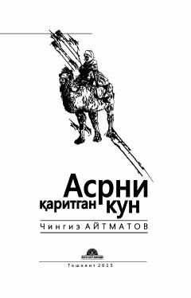

AQManqurtlik va xotira haqidagi buyuk qirg'iz romanining o'zbekcha tarjimasi.
Chingiz Aytmatovning ushbu romani Edgey Buron va uning atrofidagilar hayoti orqali xotira, insoniylik va manqurtlik mavzularini chuqur o'rganadi. Asarda 'manqurt' tushunchasi ilk bor kiritilgan bo'lib, o'z ildizlarini unutgan insonning fojiali qismati tasvirlanadi. Roman Asil Rashidov tomonidan rus tilidan o'zbek tiliga tarjima qilingan.